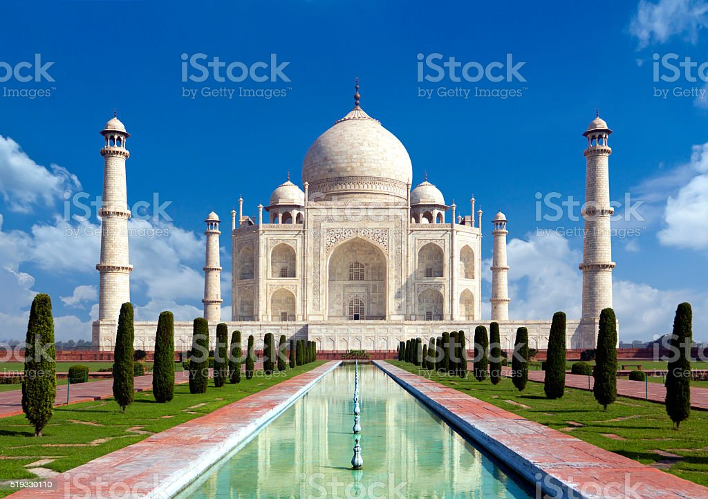

introduction:
- the tajmahal is located on the rightt of the right bank of the muna river in a vast mughal garden that encompasses nearly 17hectares,in the agra district in uttar pradesh.
- the taj mahal is concidered to be the greatest architecture acheivement i the whole range of indo-islamic architecture.
history:
- it was build by mughal emperor shah jahan in memor of this wife mumtaz mahhal with construction starting in 1632 AD and completed 1648AD ,with guest houuse in the main gate way.
- the taj mahal is considered as the greatest architectural achievement in the whole range of indo-islamic.
criterian:
- taj mahal represents the finest architeturaland artistic acheivement through perfect harmony.
- Forits construction masons,stone cuters,inlayers,carvers,paintersfrom the whole emperor and also from the centeral asia ans iran.
integrity:
- integrity is maintaine in the intactness of tomb,moque,guest house,main gate and the whole taj mahal.
- in facilities furtherdevelopment of tourism facilitie will need to ensure that the functioal and visual integrity of the property is maintained.